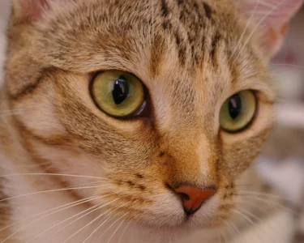

A quiet place for cat lovers
Stay a little.
Gently stroke the cat. Sound starts with your first touch.

Loading sample / 正在加载素材…
Real photograph · Chelsea · Stefan van der Walt CC0 ↗
Gently stroke the cat. Sound starts with your first touch.

Loading sample / 正在加载素材…